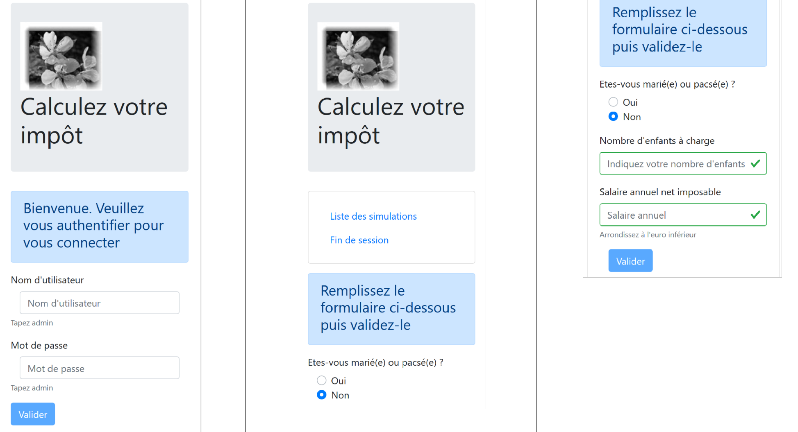

19. تحسينات عميل Vue.js
19.1. Introduction
سنقوم باختبار المشروع [vuejs-21] باستخدام خادم التطوير. ولذلك، سنحتاج مرة أخرى إلى أن يرسل الخادم الرؤوس CORS. لذلك، يجب أن يسمح الملف [config.json] الخاص بالإصدار 14 من خادم حساب الضرائب بهذه الرؤوس:

يتم إنشاء المشروع [vuejs-21] في البداية عن طريق نسخ المشروع [vuejs-20]. ثم يتم تعديله ليصبح [3].
تظهر ملفات جديدة:
- [session.js]: يقوم بتصدير كائن [session] الذي سيحتوي على معلومات حول الجلسة الحالية؛
- [pluginSession]: يتيح الكائن السابق [session] في الخاصية [$session] الخاصة بالطرق العرض؛
- [NotFound.vue]: عرض طريقة عرض جديدة عندما يطلب المستخدم يدويًّا كائن URL غير موجود؛
سيتم تعديل الملفات التالية:
- [main.js]: سيقوم بتهيئة الجلسة الحالية، ثم عند قيام المستخدم بإدخال URL يدويًّا، سيقوم باستعادتها؛
- [router.js]: تمت إضافة عناصر تحكم لمعالجة الحالات التي يقوم فيها المستخدم بكتابة URL؛
- [store.js]: تمت إضافة تعديل جديد؛
- [config.js]: تمت إضافة تكوين جديد؛
- طرق عرض مختلفة تهدف أساسًا إلى حفظ الجلسة الحالية في لحظات حاسمة من دورة حياة التطبيق. ثم يتم استعادة هذه الجلسة في كل مرة يقوم فيها المستخدم بإدخال URL يدويًّا؛
19.2. المتجر [Vuex]
يتطور البرنامج النصي [./store] على النحو التالي:
// مكون إضافي Vuex
import Vue from 'vue'
import Vuex from 'vuex'
Vue.use(Vuex);
// متجر Vuex
const store = new Vuex.Store({
state: {
// جدول عمليات المحاكاة
simulations: [],
// رقم آخر محاكاة
idSimulation: 0
},
mutations: {
// حذف السطر رقم الفهرس
deleteSimulation(state, index) {
...
},
// إضافة محاكاة
addSimulation(state, simulation) {
...
},
// تنظيف الحالة
clear(state) {
// لا توجد محاكاة أخرى
state.simulations = [];
// يبدأ ترقيم عمليات المحاكاة من 0
state.idSimulation = 0;
}
}
});
// تصدير الكائن [store]
export default store;
- الأسطر 24-29: التعديل [clear] يحذف قائمة المحاكاة المسجلة ويعيد رقم آخر محاكاة إلى 0.
19.3. الجلسة
تنشأ الحاجة إلى جلسة عمل من حقيقة أنه عندما يكتب المستخدم URL في حقل عنوان المتصفح، يتم تنفيذ البرنامج النصي [main.js] مرة أخرى. لكن هذا البرنامج النصي يحتوي على التعليمات التالية:
// مخزن Vuex
import store from './store'
تقوم هذه التعليمات باستيراد الملف التالي: [./store]:
// مكوّن إضافي لـ Vuex
import Vue from 'vue'
import Vuex from 'vuex'
Vue.use(Vuex);
// تخزين Vuex
const store = new Vuex.Store({
state: {
// جدول عمليات المحاكاة
simulations: [],
// رقم آخر محاكاة
idSimulation: 0
},
mutations: {
...
}
});
// تصدير الكائن [store]
export default store;
ونلاحظ، في الأسطر 7-13، أنه يتم استيراد مصفوفة محاكاة فارغة. لذا، إذا كانت هناك محاكاة قبل أن يكتب المستخدم URL في حقل عنوان المتصفح، فإنها تختفي بعد ذلك. الفكرة هي:
- استخدام جلسة عمل لتخزين المعلومات التي نريد الاحتفاظ بها في حالة قيام المستخدم بإدخال URL يدويًا؛
- حفظها في لحظات محددة من التطبيق؛
- استعادتها في [main.js] الذي يتم تنفيذه دائمًا عند كتابة URL يدويًّا؛
النص البرمجي [./session] هو كما يلي:
// استيراد متغير Vuex
import store from './store'
// يتم استيراد التكوين
import config from './config';
// الكائن [session]
const session = {
// بدء الجلسة
started: false,
// المصادقة
authenticated: false,
// وقت الحفظ
saveTime: "",
// الطبقة [métier]
métier: null,
// حالة Vuex
state: null,
// حفظ الجلسة في سلسلة jSON
save() {
// يتم إضافة بعض الخصائص إلى الجلسة
this.saveTime = Date.now();
this.state = store.state;
// تحويلها إلى jSON
const json = JSON.stringify(this);
// يتم تخزينها في المتصفح
localStorage.setItem("session", json);
// eslint-disable-next-line no-console
console.log("session save", json);
},
// استعادة الجلسة
restore() {
// يتم استرداد الجلسة jSON من المتصفح
const json = localStorage.getItem("session")
// إذا تم استرداد أي شيء
if (json) {
// يتم استعادة جميع مفاتيح الجلسة
const restore = JSON.parse(json);
for (var key in restore) {
if (restore.hasOwnProperty(key)) {
this[key] = restore[key];
}
}
// إذا تجاوزت مدة عدم النشاط المحددة منذ بداية الجلسة، نبدأ من الصفر
let durée = Date.now() - this.saveTime;
if (durée > config.duréeSession) {
// يتم إفراغ الجلسة - وسيتم حفظها أيضًا
session.clear();
} else {
// يتم إعادة إنشاء مخزن Vuex
store.replaceState(JSON.parse(JSON.stringify(this.state)));
}
}
// eslint-disable-next-line no-console
console.log("session restore", this);
},
// نقوم بتنظيف الجلسة
clear() {
// eslint-disable-next-line no-console
console.log("session clear");
// إعادة تعيين بعض حقول الجلسة
this.authenticated = false;
this.saveTime = "";
this.started = false;
if (this.métier) {
// إعادة تعيين الحقل [taxAdminData]
this.métier.taxAdminData = null;
}
// يتم مسح مخزن Vuex أيضًا
store.commit("clear");
// يتم حفظ الجلسة الجديدة
this.save();
},
}
// تصدير الكائن [session]
export default session;
تعليقات
- السطر 2: ستقوم الجلسة أيضًا بتضمين مخزن [Vuex] (قائمة عمليات المحاكاة، رقم آخر عملية محاكاة تم إجراؤها)؛
- الأسطر 7-17: المعلومات التي تحتفظ بها الجلسة:
- [started]: ما إذا كانت الجلسة jSON مع الخادم قد بدأت أم لا؛
- [authenticated]: ما إذا كان المستخدم قد قام بالمصادقة أم لا؛
- [saveTime]: تاريخ آخر عملية حفظ بالمللي ثانية؛
- [métier]: مرجع إلى الطبقة [métier]. تحتوي هذه الطبقة على البيانات [taxAdminData] التي تسمح بحساب الضريبة؛
- [state]: حالة المخزن [Vuex] (قائمة عمليات المحاكاة، رقم آخر عملية محاكاة تم إجراؤها)؛
- الأسطر 20-30: تقوم الطريقة [save] بحفظ الجلسة محليًّا على المتصفح الذي يقوم بتشغيل التطبيق؛
- السطر 22: يتم تسجيل وقت الحفظ؛
- السطر 23: يتم استرداد [state] من مخزن [Vuex]؛
- السطر 25: يتم إنشاء سلسلة jSON الخاصة بالجلسة؛
- السطر 27: يتم تخزينها محليًّا على المتصفح المرتبط بالمفتاح [session]؛
- الأسطر 33-57: تتيح الطريقة [restore] استعادة جلسة عمل من نسختها الاحتياطية المحلية على المتصفح؛
- السطر 35: يتم استرداد النسخة الاحتياطية المحلية jSON؛
- السطر 37: إذا تم استرداد أي شيء؛
- الأسطر 39-44: يتم إعادة تكوين الكائن [session]؛
- السطر 46: يتم حساب المدة التي تفصلنا عن آخر نسخة احتياطية؛
- الأسطر 47-50: إذا كانت هذه المدة أكبر من قيمة [config.duréeSession] المحددة في التكوين، تتم إعادة تعيين الجلسة (السطر 49) ويتم حفظها في هذه المناسبة؛
- السطر 52: وإلا يتم إعادة إنشاء السمة [state] لمخزن [Vuex]؛
- الأسطر 60-75: تقوم الطريقة [clear] بإعادة تعيين الجلسة؛
- الأسطر 64-70: يتم إعادة تعيين خصائص الجلسة إلى قيمها الأولية؛
- السطر 72: وكذلك مخزن [Vuex]؛
- السطر 74: يتم حفظ الجلسة الجديدة؛
19.4. ملف التكوين [config]
يتطور ملف [./config] على النحو التالي:
// استخدام المكتبة [axios]
const axios = require('axios');
// انتهت مهلة انتظار الطلبات HTTP
axios.defaults.timeout = 2000;
...
// تصدير التكوين
export default {
// كائن [axios]
axios: axios,
// الحد الأقصى لفترة عدم النشاط للجلسة: 5 دقائق = 300 ثانية = 300000 مللي ثانية
duréeSession: 300000
}
- السطر 12: سنقوم بإدارة جلسة عمل التطبيق بطريقة تشبه إلى حد ما إدارة جلسة عمل الويب. نحدد هنا مدة أقصى للخمول تبلغ 5 دقائق؛
19.5. المكوّن الإضافي [pluginSession]
كما تم فعله مرارًا وتكرارًا، سيسمح المكون الإضافي [pluginSession] للعروض بالوصول إلى الجلسة عبر الخاصية [this.$session]:
export default {
install(Vue, session) {
// إضافة خاصية [$session] إلى فئة العرض
Object.defineProperty(Vue.prototype, '$session', {
// عند الإشارة إلى Vue.$session، يتم تعيين المعلمة الثانية إلى [session]
get: () => session,
})
}
}
19.6. البرنامج النصي الرئيسي [main]
يتطور البرنامج النصي الرئيسي [./main.js] على النحو التالي:
// سجل بدء التشغيل
// eslint-disable-next-line no-console
console.log("main started");
// عمليات الاستيراد
import Vue from 'vue'
...
// إنشاء مثيل الطبقة [métier]
import Métier from './couches/Métier';
const métier = new Métier();
// المكوّن الإضافي [métier]
import pluginMétier from './plugins/pluginMétier'
Vue.use(pluginMétier, métier)
// مخزن Vuex
import store from './store'
// الجلسة
import session from './session';
import pluginSession from './plugins/pluginSession'
Vue.use(pluginSession, session)
// يتم استعادة الجلسة قبل إعادة التشغيل
session.restore();
// يتم استعادة الطبقة [métier]
if (session.métier && session.métier.taxAdminData) {
métier.setTaxAdminData(session.métier.taxAdminData);
}
// بدء تشغيل التطبيق UI
new Vue({
el: '#التطبيق،
// الموجه
router: router,
// ستارة Vuex
store: store,
// الشاشة الرئيسية
render: h => h(Main),
})
// سجل النهاية
// eslint-disable-next-line no-console
console.log("main terminated, session=", session);
- السطر 19: يتم استيراد الجلسة؛
- السطر 20: يتم استيراد المكون الإضافي الخاص به؛
- السطر 21: يتم دمج المكون الإضافي [pluginSession] في [Vue]. بعد هذه التعليمات، تصبح الجلسة متاحة لجميع العروض في سمة [$session] الخاصة بها؛
- السطر 27: يتم استعادة الجلسة. ثم يتم تهيئة الجلسة المستوردة في السطر 11 بمحتوى آخر نسخة احتياطية لها؛
- بعد السطر 16، تصبح العروض مزودة بخاصية [$métier] التي تمت تهيئتها في السطر 12. لا تحتوي هذه الخاصية على المعلومات [taxAdminData] التي تسمح بحساب الضريبة؛
- الأسطر 30-32: إذا كانت عملية الاستعادة التي تمت للتو قد أعادت الخاصية [session.métier.taxAdminData]، فإن الخاصية [$métier] الخاصة بالطرق يتم تهيئتها بهذه القيمة؛
19.7. ملف التوجيه [router]
يتطور ملف التوجيه [./router] على النحو التالي:
// الاستيرادات
import Vue from 'vue'
import VueRouter from 'vue-router'
// الطرق
import Authentification from './views/Authentification'
import CalculImpot from './views/CalculImpot'
import ListeSimulations from './views/ListeSimulations'
import NotFound from './views/NotFound'
// الجلسة
import session from './session'
// مكوّن التوجيه
Vue.use(VueRouter)
// مسارات التطبيق
const routes = [
// المصادقة
{ path: '/', name: 'authentification', component: Authentification },
{ path: '/authentification', name: 'authentification', component: Authentification },
// حساب الضريبة
{
path: '/calcul-impot', name: 'calculImpot', component: CalculImpot,
meta: { authenticated: true }
},
// قائمة عمليات المحاكاة
{
path: '/liste-des-simulations', name: 'listeSimulations', component: ListeSimulations,
meta: { authenticated: true }
},
// إنهاء الجلسة
{
path: '/fin-session', name: 'finSession'
},
// صفحة غير معروفة
{
path: '*', name: 'notFound', component: NotFound,
},
]
// الموجه
const router = new VueRouter({
// المسارات
routes,
// طريقة عرض URL
mode: 'history',
// URL الأساسي للتطبيق
base: '/client-vuejs-impot/'
})
// التحقق من المسارات
router.beforeEach((to, from, next) => {
// eslint-disable-next-line no-console
console.log("router to=", to, "from=", from);
// طريق مخصص للمستخدمين المعتمدين؟
if (to.meta.authenticated && !session.authenticated) {
next({
// ننتقل إلى مرحلة المصادقة
name: 'authentification',
})
// العودة إلى حلقة الأحداث
return;
}
// حالة خاصة بنهاية الجلسة
if (to.name === "finSession") {
// تنظيف الجلسة
session.clear();
// الانتقال إلى العرض [authentification]
next({
name: 'authentification',
})
// العودة إلى حلقة الأحداث
return;
}
// حالات أخرى - عرض التوجيه العادي التالي
next();
})
// تصدير جهاز التوجيه
export default router
تعليقات
- الأسطر 16-38: تمت إضافة معلومات إضافية إلى بعض المسارات؛
- السطر 19: تم إنشاء مسار جديد للانتقال إلى المشهد [Authentification]؛
- الأسطر 21-24: المسار المؤدي إلى العرض [CalculImpot] أصبح له الآن خاصية [meta] (هذا الاسم إلزامي). يمكن أن يكون محتوى هذا الكائن أي شيء ويتم تحديده من قبل المطور؛
- السطر 23: نضع في [meta] الخاصية [authenticated] (يمكن أن يكون هذا الاسم أي اسم). وهذا يعني بالنسبة لنا أنه للانتقال إلى العرض [CalculImpot]، يجب أن يكون المستخدم قد تمت مصادقته؛
- الأسطر 26-29: نقوم بنفس الإجراء بالنسبة للمسار المؤدي إلى العرض [ListeSimulations]. وهنا أيضًا، يجب أن يكون المستخدم قد تم توثيقه؛
- ستسمح لنا الخاصية [meta.authenticated] بالتحقق من أن المستخدم الذي يكتب يدويًّا قيم URL الخاصة بعروض [CalculImpot, ListeSimulations] لن يتمكن من الحصول عليها ما لم يتم توثيقه؛
- الأسطر 51-76: يتم تنفيذ الأسلوب [beforeEach] قبل توجيه أي عرض. وهذا هو الوقت المناسب لإجراء عمليات التحقق؛
- [to]: المسار التالي في حالة عدم اتخاذ أي إجراء؛
- [from]: المسار الأخير المعروض؛
- [next]: دالة تسمح بتغيير المسار التالي المعروض؛
- السطر 55: نتحقق مما إذا كان المسار التالي يتطلب مصادقة المستخدم؛
- الأسطر 56-59: إذا كان الأمر كذلك ولم يتم مصادقة المستخدم، يتم تغيير المسار التالي إلى العرض [Authentification]؛
- الأسطر 64-73: يتم معالجة الحالة الخاصة للمسار [finSession] الوارد في الأسطر 30-32. لا يوجد عرض مرتبط بهذا المسار؛
- السطر 66: يتم إعادة تعيين الجلسة إلى قيمتها الأولية؛
- الأسطر 68-70: يتم تعيين العرض [Authentification] كعرض تالي؛
- السطر 75: إذا لم نكن في الحالتين السابقتين، فإننا نكتفي بالانتقال إلى المسار المحدد في ملف التوجيه؛
- الأسطر 35-37: يتم توفير عرض [NotFound] إذا كان المسار الذي أدخله المستخدم لا يتطابق مع أي مسار معروف. يتم استيراد هذا العرض في السطر 8. يتم التحقق من المسارات بالترتيب الوارد في ملف التوجيه. لذا، إذا وصلنا إلى السطر 36، فهذا يعني أن المسار المطلوب لا يندرج ضمن أي من المسارات الواردة في الأسطر 18-33؛
19.8. عرض [NotFound]
يتم عرض العرض [NotFound] إذا كان المسار الذي أدخله المستخدم لا يتطابق مع أي مسار معروف:

رمز العرض هو كما يلي:
<!-- تعريف HTML للعرض -->
<template>
<!-- تنسيق الصفحة -->
<Layout :left="true" :right="true">
<!-- تنبيه في العمود الأيمن -->
<template slot="right">
<!-- رسالة على خلفية صفراء -->
<b-alert show variant="danger" align="center">
<h4>Cette page n'existe pas</h4>
</b-alert>
</template>
<!-- قائمة التنقل في العمود الأيسر -->
<Menu slot="left" :options="options" />
</Layout>
</template>
<script>
// الاستيرادات
import Layout from "./Layout";
import Menu from "./Menu";
export default {
// المكونات
components: {
Layout,
Menu
},
// الحالة الداخلية للمكون
data() {
return {
// خيارات قائمة التنقل
options: [
{
text: "Authentification",
path: "/"
}
]
};
},
// دورة الحياة
created() {
// eslint-disable-next-line
console.log("NotFound created");
// ننظر في خيارات القائمة التي يجب عرضها
if (this.$session.authenticated && this.$métier.taxAdminData) {
// يمكن للمستخدم إجراء عمليات محاكاة
Array.prototype.push.apply(this.options, [
{
text: "Calcul de l'impôt",
path: "/calcul-impot"
},
{
text: "Liste des simulations",
path: "/liste-des-simulations"
}
]);
}
}
};
</script>
تعليقات
- السطر 4: يستخدم العمودين الخاصين بالطرق الموجهة؛
- الأسطر 6-11: رسالة خطأ؛
- السطر 13: قائمة التنقل تشغل العمود الأيسر؛
- الأسطر 31-36: الخيارات الافتراضية للقائمة؛
- الأسطر 40-57: الكود الذي يتم تنفيذه عند إنشاء العرض؛
- السطر 44: يتم التحقق مما إذا كان بإمكان المستخدم إجراء عمليات محاكاة؛
- الأسطر 45-55: إذا كان الجواب نعم، يتم إضافة خيارين إلى قائمة التنقل، وهما الخياران اللذان يتطلبان المصادقة ووجود طبقة [métier] جاهزة للعمل (الأسطر 46-55)؛
19.9. الطريقة [Authentification]
تتطور طريقة العرض [Authentification] على النحو التالي:
<!-- تعريف HTML للعرض -->
<template>
<Layout :left="false" :right="true">
...
</Layout>
</template>
<!-- ديناميكية العرض -->
<script>
import Layout from "./Layout";
export default {
// حالة المكون
data() {
return {
// المستخدم
user: "",
// كلمة المرور الخاصة به
password: "",
// يتحكم في عرض رسالة خطأ
showError: false,
// رسالة الخطأ
message: ""
};
},
// المكونات المستخدمة
components: {
Layout
},
// الخصائص المحسوبة
computed: {
// المدخلات الصحيحة
valid() {
return this.user && this.password && this.$session.started;
}
},
// معالجات الأحداث
methods: {
// ----------- المصادقة
async login() {
try {
// بدء الانتظار
this.$emit("loading", true);
// لم تتم المصادقة بعد
this.$session.authenticated = false;
// المصادقة معطلة على الخادم
const response = await this.$dao.authentifierUtilisateur(
this.user,
this.password
);
// نهاية التحميل
this.$emit("loading", false);
// تحليل استجابة الخادم
if (response.état != 200) {
// يتم عرض الخطأ
this.message = response.réponse;
this.showError = true;
// العودة إلى حلقة الأحداث
return;
}
// لا توجد أخطاء
this.showError = false;
// تمت المصادقة
this.$session.authenticated = true;
// --------- يتم الآن طلب البيانات من مصلحة الضرائب
// في البداية، لا توجد بيانات
this.$métier.setTaxAdminData(null);
// بدء الانتظار
this.$emit("loading", true);
// طلب معلق لدى الخادم
const response2 = await this.$dao.getAdminData();
// نهاية التحميل
this.$emit("loading", false);
// تحليل الرد
if (response2.état != 1000) {
// يتم عرض الخطأ
this.message = response2.réponse;
this.showError = true;
// العودة إلى حلقة الأحداث
return;
}
// لا توجد أخطاء
this.showError = false;
// يتم تخزين البيانات المستلمة في الطبقة [métier]
this.$métier.setTaxAdminData(response2.réponse);
// يمكن الانتقال إلى حساب الضريبة
this.$router.push({ name: "calculImpot" });
} catch (error) {
// يتم إحالة الخطأ إلى المكون الرئيسي
this.$emit("error", error);
} finally {
// تحديث الجلسة
this.$session.métier = this.$métier;
// يتم حفظ الجلسة
this.$session.save();
}
}
},
// دورة الحياة: تم إنشاء المكون للتو
created() {
// eslint-disable-next-line
console.log("Authentification created");
// هل يمكن للمستخدم إجراء عمليات محاكاة؟
if (
this.$session.started &&
this.$session.authenticated &&
this.$métier.taxAdminData
) {
// إذن يمكن للمستخدم إجراء عمليات محاكاة
this.$router.push({ name: "calculImpot" });
// العودة إلى حلقة الأحداث
return;
}
// إذا كانت الجلسة jSON قد بدأت بالفعل، فلا يتم إعادة تشغيلها مرة أخرى
if (!this.$session.started) {
// بدء الانتظار
this.$emit("loading", true);
// يتم تهيئة الجلسة مع الخادم - طلب غير متزامن
// يتم استخدام الوعد الذي تم إرجاعه بواسطة أساليب الطبقة [dao]
this.$dao
// يتم تهيئة جلسة عمل jSON
.initSession()
// تم الحصول على الرد
.then(response => {
// انتهى الانتظار
this.$emit("loading", false);
// تحليل الرد
if (response.état != 700) {
// يتم عرض الخطأ
this.message = response.réponse;
this.showError = true;
// العودة إلى حلقة الأحداث
return;
}
// بدأت الجلسة
this.$session.started = true;
})
// في حالة حدوث خطأ
.catch(error => {
// يتم رفع الخطأ إلى العرض [Main]
this.$emit("error", error);
})
// في جميع الأحوال
.finally(() => {
// يتم حفظ الجلسة
this.$session.save();
});
}
}
};
</script>
تعليقات
- تم تمييز التعليمات التي تستخدم الجلسة التي تم إدخالها في هذا الإصدار من عميل [Vue.js] باللون الأصفر؛
- السطران 97 و148: في نهاية الطرق [login, created]، يتم حفظ الجلسة بغض النظر عن نتيجة الاستعلامات HTTP التي تتم في هذه الطرق (البند [finally] في كلتا الحالتين)؛
- يتم تنفيذ الأسلوب [created] في الأسطر 102-150 في كل مرة يتم فيها إنشاء العرض [Authentification]. إذا كان المستخدم هو من أدخل رمز URL الخاص بالطريقة، فستحدد الجلسة الإجراءات التي يجب اتخاذها؛
- الأسطر 106-115: إذا تم بدء الجلسة jSON، وتم توثيق المستخدم، وتم تهيئة البيانات [this.$métier.taxAdminData]، فيمكن للمستخدم الانتقال مباشرةً إلى نموذج حساب الضريبة (السطر 112)؛
- السطر 117: كانت الطريقة [created] تُستخدم في الإصدار السابق لتهيئة جلسة jSON مع الخادم. هذه المرحلة غير ضرورية إذا كانت قد تمت بالفعل؛
- الأسطر 42-66: طريقة المصادقة؛
- السطر 66: في حالة نجاح المصادقة، يتم تسجيل ذلك في الجلسة؛
- الأسطر 67-92: طلب بيانات إدارة الضرائب [taxAdminData] من الخادم؛
- السطر 95: في نهاية هذه المرحلة، يتم تحديث الخاصية [métier] للجلسة سواء نجحت العملية أم لا؛
19.10. طريقة العرض [CalculImpot]
يتطور كود العرض [CalculImpot] على النحو التالي:
<!-- تعريف HTML للطريقة -->
<template>
...
</template>
<script>
// عمليات الاستيراد
import FormCalculImpot from "./FormCalculImpot";
import Menu from "./Menu";
import Layout from "./Layout";
export default {
// الحالة الداخلية
data() {
return {
// خيارات القائمة
options: [
{
text: "Liste des simulations",
path: "/liste-des-simulations"
},
{
text: "Fin de session",
path: "/fin-session"
}
],
// نتيجة حساب الضريبة
résultat: "",
résultatObtenu: false
};
},
// المكونات المستخدمة
components: {
Layout,
FormCalculImpot,
Menu
},
// طرق إدارة الأحداث
methods: {
// نتيجة حساب الضريبة
handleResultatObtenu(résultat) {
// يتم تكوين النتيجة في سلسلة HTML
...
// محاكاة لـ +
this.$store.commit("addSimulation", résultat);
// يتم حفظ الجلسة
this.$session.save();
}
},
// دورة الحياة
created() {
// eslint-disable-next-line
console.log("CalculImpot created");
}
};
</script>
تعليقات
- السطر 45: تُضاف المحاكاة المحسوبة إلى مخزن البيانات [Vuex]. ويؤثر ذلك على الجلسة التي تشمل الخاصية [state] الخاصة بمخزن البيانات. ولذلك يتم حفظ الجلسة (السطر 47)؛
- السطر 51: يتم إنشاء طريقة [created] لتتبع عمليات إنشاء العروض في سجلات النظام؛
19.11. الطريقة [ListeSimulations]
تتطور طريقة العرض [ListeSimulations] على النحو التالي:
<!-- تعريف HTML للعرض -->
<template>
...
</div>
</template>
<script>
// الاستيرادات
import Layout from "./Layout";
import Menu from "./Menu";
export default {
// المكونات
components: {
Layout,
Menu
},
// الحالة الداخلية
data() {
...
},
// الحالة الداخلية المحسوبة
computed: {
// قائمة عمليات المحاكاة المأخوذة من مخزن Vuex
simulations() {
return this.$store.state.simulations;
}
},
// الأساليب
methods: {
supprimerSimulation(index) {
// eslint-disable-next-line
console.log("supprimerSimulation", index);
// حذف المحاكاة رقم [index]
this.$store.commit("deleteSimulation", index);
// حفظ الجلسة
this.$session.save();
}
},
// دورة الحياة
created() {
// eslint-disable-next-line
console.log("ListeSimulations created");
}
};
</script>
تعليقات
- السطر 36: بعد حذف محاكاة في السطر 34، يتم حفظ الجلسة لمراعاة هذا التغيير في الحالة؛
- الأسطر 40-43: نواصل متابعة إنشاء العروض؛
19.12. تنفيذ المشروع

أثناء الاختبارات، تحقق من النقاط التالية:
- إذا «استخدم» المستخدم التطبيق عبر روابط قائمة التنقل وأزرار/روابط الإجراءات، فإن التطبيق يعمل؛
- إذا قام المستخدم بإدخال URL يدويًا، فإن التطبيق يستمر في العمل. قم بإجراء الاختبار التالي على وجه الخصوص:
- قم بإجراء عمليات محاكاة؛
- بمجرد الوصول إلى الشاشة [ListeSimulations]، أعد تحميل (F5) الشاشة. في التطبيق السابق [vuejs-20]، كانت المحاكاة تُفقد عند إعادة التحميل. لكن هذا ليس هو الحال هنا: حيث يتم استعادة المحاكاة التي تم إجراؤها مسبقًا؛
- انظر إلى السجلات لفهم:
- في أي لحظة يتم تنفيذ البرنامج النصي [main]. يجب أن تلاحظ أنه يتم تنفيذه في كل مرة يقوم فيها المستخدم بإدخال URL يدويًّا؛
- في أي أوقات يتم إنشاء العروض. يجب أن تلاحظوا أنها تُنشأ في كل مرة يتم عرضها فيها؛
- كيفية عمل التوجيه. قبل كل عملية توجيه، يتم إنشاء سجل يوضح لك:
- المسار الذي أتيت منه؛
- المسار الذي ستتجه إليه؛
19.13. نشر التطبيق على خادم محلي
كممارسة، اتبع الفقرة |النشر على خادم محلي|، لنشر المشروع [vuejs-21] على خادم Laragon المحلي. ثم اختبره.
19.14. تحسين الإصدار المخصص للأجهزة المحمولة
من الناحية النظرية، من المفترض أن يتيح لنا استخدام Bootstrap الحصول على تطبيق قابل للاستخدام على أجهزة مختلفة: الهواتف الذكية، والأجهزة اللوحية، وأجهزة الكمبيوتر المحمولة والمكتبية. وما يميز هذه الأجهزة عن بعضها هو حجم شاشاتها.
إذا قمنا باختبار الإصدار [vuejs-21] على هاتف محمول، نلاحظ أن عرض الصفحات في حالة فوضى. الإصدار [vuejs-22] يصحح هذه المشكلة. تتم جميع التعديلات في قوالب الصفحات. وقد تمثلت بشكل أساسي في تطوير عرض مخصص لشاشة الهاتف الذكي. وبمجرد الانتهاء من ذلك، يصبح العرض على الشاشات الأكبر حجمًا سلسًا بفضل Bootstrap.

19.14.1. طريقة العرض [Main]
تتطور طريقة عرض [Main] على النحو التالي:
<!-- تعريف HTML للعرض -->
<template>
<div class="container">
<b-card>
<!-- جومبوترون -->
<b-jumbotron>
<b-row>
<b-col sm="4">
<img src="../assets/logo.jpg" alt="Cerisier en fleurs" />
</b-col>
<b-col sm="8">
<h1>Calculez votre impôt</h1>
</b-col>
</b-row>
</b-jumbotron>
....
</b-card>
</div>
</template>
تعليقات
- السطر 8: حيث كان يوجد [cols=’4’]، يُكتب [sm=’4’]. [sm] تعني [small]. تندرج شاشات الهواتف الذكية ضمن هذه الفئة. الفئات الأخرى هي [xs=extra small, md=medium, lg=large, xl=extra large]؛
- السطر 11: كما سبق؛
19.14.2. العرض [Layout]
تتطور طريقة العرض [Layout] على النحو التالي:
<!-- تعريف HTML لتخطيط العرض الموجه -->
<template>
<!-- سطر -->
<div>
<b-row>
<!-- منطقة من ثلاثة أعمدة على اليسار -->
<b-col sm="3" v-if="left">
<slot name="left" />
</b-col>
<!-- منطقة مكونة من تسعة أعمدة على اليمين -->
<b-col sm="9" v-if="right">
<slot name="right" />
</b-col>
</b-row>
</div>
</template>
19.14.3. الطريقة [Authentification]
يتغير العرض [Authentification] على النحو التالي:
<!-- تعريف HTML للعرض -->
<template>
<Layout :left="false" :right="true">
<template slot="right">
<!-- نموذج HTML - يتم إرسال قيمه باستخدام الإجراء [authentifier-utilisateur] -->
<b-form @submit.prevent="login">
<!-- العنوان -->
<b-alert show variant="primary">
<h4>Bienvenue. Veuillez vous authentifier pour vous connecter</h4>
</b-alert>
<!-- السطر الأول -->
<b-form-group label="Nom d'utilisateur" label-for="user" description="Tapez admin">
<!-- منطقة إدخال المستخدم -->
<b-col sm="6">
<b-form-input type="text" id="user" placeholder="Nom d'utilisateur" v-model="user" />
</b-col>
</b-form-group>
<!-- السطر الثاني -->
<b-form-group label="Mot de passe" label-for="password" description="Tapez admin">
<!-- حقل إدخال كلمة المرور -->
<b-col sm="6">
<b-input type="password" id="password" placeholder="Mot de passe" v-model="password" />
</b-col>
</b-form-group>
<!-- السطر الثالث -->
<b-alert
show
variant="danger"
v-if="showError"
class="mt-3"
>L'erreur suivante s'est produite : {{message}}</b-alert>
<!-- زر من النوع [submit] في السطر الثالث -->
<b-row>
<b-col sm="2">
<b-button variant="primary" type="submit" :disabled="!valid">Valider</b-button>
</b-col>
</b-row>
</b-form>
</template>
</Layout>
</template>
تعليقات
- السطران 11 و19: تم حذف السمة [label-cols] التي كانت تحدد عدد الأعمدة في تسمية حقل الإدخال. وفي غياب هذه السمة، تظهر التسمية فوق حقل الإدخال. وهذا يناسب شاشات الهواتف الذكية بشكل أفضل؛
19.14.4. طريقة العرض [CalculImpot]
تتغير طريقة عرض [CalculImpot] على النحو التالي:
<!-- تعريف HTML للطريقة -->
<template>
<div>
<Layout :left="true" :right="true">
<!-- نموذج حساب الضريبة على اليمين -->
<FormCalculImpot slot="right" @resultatObtenu="handleResultatObtenu" />
<!-- قائمة التنقل على اليسار -->
<Menu slot="left" :options="options" />
</Layout>
<!-- منطقة عرض نتائج حساب الضريبة أسفل النموذج -->
<b-row v-if="résultatObtenu" class="mt-3">
<!-- منطقة فارغة مكونة من ثلاثة أعمدة -->
<b-col sm="3" />
<!-- منطقة مكونة من تسعة أعمدة -->
<b-col sm="9">
<b-alert show variant="success">
<span v-html="résultat"></span>
</b-alert>
</b-col>
</b-row>
</div>
</template>
19.14.5. طريقة العرض [FormCalculImpot]
يتغير العرض [FormCalculImpot] على النحو التالي:
<!-- تعريف HTML للطريقة -->
<template>
<!-- النموذج HTML -->
<b-form @submit.prevent="calculerImpot" class="mb-3">
<!-- رسالة مكونة من 12 عمودًا على خلفية زرقاء -->
<b-row>
<b-col sm="12">
<b-alert show variant="primary">
<h4>Remplissez le formulaire ci-dessous puis validez-le</h4>
</b-alert>
</b-col>
</b-row>
<!-- عناصر النموذج -->
<!-- السطر الأول -->
<b-form-group label="Etes-vous marié(e) ou pacsé(e) ?">
<!-- أزرار الاختيار على 5 أعمدة-->
<b-col sm="5">
<b-form-radio v-model="marié" value="oui">Oui</b-form-radio>
<b-form-radio v-model="marié" value="non">Non</b-form-radio>
</b-col>
</b-form-group>
<!-- السطر الثاني -->
<b-form-group label="Nombre d'enfants à charge" label-for="enfants">
<b-form-input
type="text"
id="enfants"
placeholder="Indiquez votre nombre d'enfants"
v-model="enfants"
:state="enfantsValide"
></b-form-input>
<!-- رسالة خطأ محتملة -->
<b-form-invalid-feedback :state="enfantsValide">Vous devez saisir un nombre positif ou nul</b-form-invalid-feedback>
</b-form-group>
<!-- السطر الثالث -->
<b-form-group
label="Salaire annuel net imposable"
label-for="salaire"
description="Arrondissez à l'euro inférieur"
>
<b-form-input
type="text"
id="salaire"
placeholder="Salaire annuel"
v-model="salaire"
:state="salaireValide"
></b-form-input>
<!-- رسالة خطأ محتملة -->
<b-form-invalid-feedback :state="salaireValide">Vous devez saisir un nombre positif ou nul</b-form-invalid-feedback>
</b-form-group>
<!-- السطر الرابع، الزر [submit] -->
<b-col sm="3">
<b-button type="submit" variant="primary" :disabled="formInvalide">Valider</b-button>
</b-col>
</b-form>
</template>
تعليقات
- الأسطر 15 و23 و35: تم حذف السمة [label-cols]؛
بالإضافة إلى ذلك، تم تطوير اختبارات الصحة:
...
// الحالة الداخلية المحسوبة
computed: {
// التحقق من صحة النموذج
formInvalide() {
return (
// الراتب غير صالح
!this.salaire.match(/^\s*\d+\s*$/) ||
// أو أطفال غير صالحين
!this.enfants.match(/^\s*\d+\s*$/) ||
// أو لم يتم الحصول على البيانات الضريبية
!this.$métier.taxAdminData
);
},
// التحقق من صحة الراتب
salaireValide() {
// يجب أن يكون رقمًا >=0
return Boolean(
this.salaire.match(/^\s*\d+\s*$/) || this.salaire.match(/^\s*$/)
);
},
// التحقق من صحة عدد الأبناء
enfantsValide() {
// يجب أن يكون رقمًا >=0
return Boolean(
this.enfants.match(/^\s*\d+\s*$/) || this.enfants.match(/^\s*$/)
);
}
},
...
تعليقات
- السطر 19: عندما لا يتم إدخال أي شيء، يُعتبر الإدخال صحيحًا. وهذا يتيح الحصول على إدخال صحيح عند عرض الصفحة لأول مرة. في الإصدار السابق، كان الإدخال يظهر في البداية على أنه خاطئ؛
- السطر 26: نفس الشيء؛
- الأسطر 5-14: لا يكون زر التحقق من الصحة نشطًا إلا إذا احتوت المدخلتان على بيانات وكانتا صالحتين؛
19.14.6. الصفحة [Menu]
تتطور طريقة العرض [Menu] على النحو التالي:
<!-- تعريف HTML للطريقة -->
<template>
<b-card class="mb-3">
<!-- قائمة Bootstrap العمودية -->
<b-nav vertical>
<!-- خيارات القائمة -->
<b-nav-item
v-for="(option,index) of options"
:key="index"
:to="option.path"
exact
exact-active-class="active"
>{{option.text}}</b-nav-item>
</b-nav>
</b-card>
</template>
تعليقات
- السطر 3: تمت إضافة العلامة <b-card> لإحاطة القائمة بإطار رفيع. وهذا يتيح تحديد موقع القائمة بشكل أفضل على الهاتف الذكي؛
19.14.7. الطريقة [ListeSimulations]
تظل طريقة العرض [ListeSimulations] دون تغيير:
<!-- تعريف HTML للعرض -->
<template>
<div>
<!-- تنسيق الصفحة -->
<Layout :left="true" :right="true">
<!-- المحاكاة في العمود الأيمن -->
<template slot="right">
<template v-if="simulations.length==0">
<!-- لا توجد محاكاة -->
<b-alert show variant="primary">
<h4>Votre liste de simulations est vide</h4>
</b-alert>
</template>
<template v-if="simulations.length!=0">
<!-- توجد محاكاة -->
<b-alert show variant="primary">
<h4>Liste de vos simulations</h4>
</b-alert>
<!-- جدول المحاكاة -->
<b-table striped hover responsive :items="simulations" :fields="fields">
<template v-slot:cell(action)="data">
<b-button variant="link" @click="supprimerSimulation(data.index)">Supprimer</b-button>
</template>
</b-table>
</template>
</template>
<!-- قائمة التنقل في العمود الأيسر -->
<Menu slot="left" :options="options" />
</Layout>
</div>
</template>
تعليقات
- السطر 20: لاحظ السمة [responsive] التي تجعل عرض الجدول يتكيف مع حجم الشاشة:

- في [2]، على الشاشات الصغيرة، يتيح شريط التمرير الأفقي عرض الجدول؛
19.14.8. طريقة العرض [NotFound]
تظل دون تغيير.
19.14.9. طرق العرض على الأجهزة المحمولة


ملاحظة: من المؤكد أن هناك إمكانية للحصول على طرق عرض أكثر ملاءمة للأجهزة المحمولة. وأشير هنا بشكل خاص إلى قائمة التنقل التي يمكن تحسينها، ولكن هناك نقاط أخرى أيضًا. لم يكن الهدف الأساسي من هذا المستند هو إنشاء تطبيق للأجهزة المحمولة. لو كان الأمر كذلك، لربما كنا قد لجأنا إلى إطار عمل مثل Ionic |https://ionicframework.com/|.